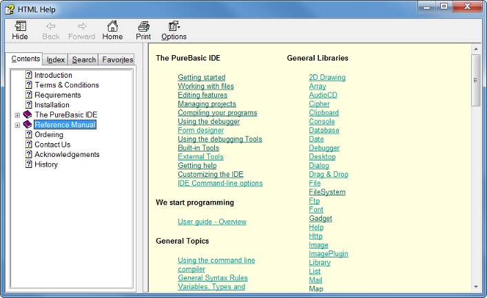

Getting Help
The PureBasic IDE provides ways to access the PureBasic help-file, as well as other files and documentation you want to view while programming.Quick access to the reference guide

By pressing the help shortcut (F1 by default) or selecting the "Help..." command from the Help menu while the mouse cursor is over a PureBasic keyword or function, the help will be opened directly at the description of that keyword or function.
If the word at the cursor position has no help entry, the main reference page will be displayed.
The reference manual can also be viewed side by side with the source code using the Help Tool.
Accessing external helpfiles from the IDE
If you have other helpfiles you wish to be able to access from the IDE, then create a "Help" subdirectory in your PureBasic folder and copy them to it. These files will appear in the "External Help" submenu of the Help menu, and in the popupmenu you get when right-clicking in the editing area. The IDE will open the helpfiles in the internal fileviewer. So files like text files can be viewed directly like this. For other types, you can use the Config Tools menu to configure an external tool to handle the type of help-file you use. The help will then be displayed in that tool.
For example, if you have pdf helpfiles, configure an external tool to handle pdf files and put the files in the Help subdirectory of PureBasic. Now if you click the file in the "external help" menu, it will be opened in that external tool.